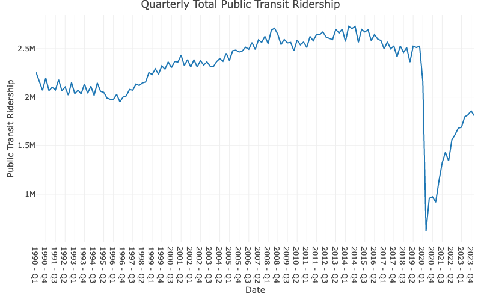

Introduction
Main reference: Gamage, P. (2026). Applied Time Series for Data Science.
Time Series Analysis of Public Transit Ridership in the Wake of COVID-19
For over a century, residents of large American cities have relied on mass public transit networks to conduct their day-to-day lives. However, in large part due to the ramifications of COVID-19, urban areas across the United States of America have seen significant drops in public transit usage. The graph below uses data from the American Public Transportation Association Quarterly Ridership Report to show this unprecedented drop and subsequent partial recovery.1

While the plot above shows that this phenomenon has slightly abated as cities have returned to a resemblance of their previous state, usage numbers still significantly lag behind those from before the pandemic. The potential consequences of this decline in usage are easy to see. Many believe this calls for decreased funding or elimination of unprofitable public transit, as money should be allocated towards areas where more people will benefit. On the other hand, the presence of affordable and reliable transportation is often seen as a public service, where monetary loss can be accepted for the good of a city and its residents. Nevertheless, understanding what drives these changes, from consumer choices to economic realities, is crucial for evaluating the future of public transit in the U.S.
This paper will analyze the causes of the public transit ridership decline and recovery, what we can expect in the future, and how different people and industries are impacted by these phenomena.
Analytical Angles
The following topics will serve as guidance for what we hope to achieve from time series analysis.
- Rapid decline in ridership from COVID-19 and gradual rebound
- Effect of remote work and unemployment, and related policies
- Impact on industries, evaluated via financial data
- Impact on different cities and demographics
- Relationship with other transportation options
- Importance of public transit access
Guiding Questions
- What were the primary causes for the rapid decline in public transit usage?
- What are the primary causes for the slow recovery in public transit usage?
- To what extent is ridership rebounding back to its previous values?
- How much of an impact does remote work have on public transit ridership?
- Are policy changes in remote work meaningfully impacting public transit ridership?
- How do consumer choices regarding transportation change over time?
- How are financial assets impacted by ridership trends?
- How does public transit usage differ between modes of transportation?
- To what extent do residents typically benefit from increased spending on public transit?
- Why is public transit a necessary option in urban areas?
Big Picture
The following diagram is a rough illustration of the topics that will be addressed, with overarching questions that will guide future analysis. In the data sources section, we will discuss which data will be used to achieve these goals.

Literature Review
Due to the importance of an industry undergoing such a rapid alteration, the recent phenomena in public transit ridership have been covered a great deal by researchers. Firstly, studies have indicated that public transit is a critical infrastructure for communities, specifically during a pandemic and to address the vulnerabilities of some underprivileged social groups. There are often disparities in impact across communities and social groups, indicating that it is important to contextualize time series data with who is most affected by their phenomena. During the COVID-19 period, studies found that greater decreases in transit demand are associated with a higher percentage of people with non-physical occupations. This tells us that employment landscape is a vital aspect to study for this project.2
One key consideration when evaluating the mode of transportation that people choose is simply their reasonable access to public transit. This provides important context to consider, as COVID-19 is certainly not the only factor that can drastically impact ridership. A term of “perceived accessibility” has been coined, essentially as a way to distinguish those who can reasonably rely on public transit for their transportation from those for whom it is not a realistic option. It is important to note that changes in public transit usage can be due to consumer choices, but often are not.3 4
References
Footnotes
Ridership report. American Public Transportation Association. (2025, March 3). https://www.apta.com/research-technical-resources/transit-statistics/ridership-report/↩︎
Liu, L., Miller, H. J., & Scheff, J. (2020). The impacts of covid-19 pandemic on public transit demand in the United States. PLOS ONE, 15(11). https://doi.org/10.1371/journal.pone.0242476↩︎
Hensher, D. A., Rose, J. M., Leong, W., Tirachini, A., & Li, Z. (2013). Choosing public transport—incorporating richer behavioural elements in modal choice models. Transport Reviews, 33(1), 92–106. https://doi.org/10.1080/01441647.2012.760671↩︎
Saif, M. A., Zefreh, M. M., & Torok, A. (2018). Public transport accessibility: A literature review. Periodica Polytechnica Transportation Engineering, 47(1), 36–43. https://doi.org/10.3311/pptr.12072↩︎